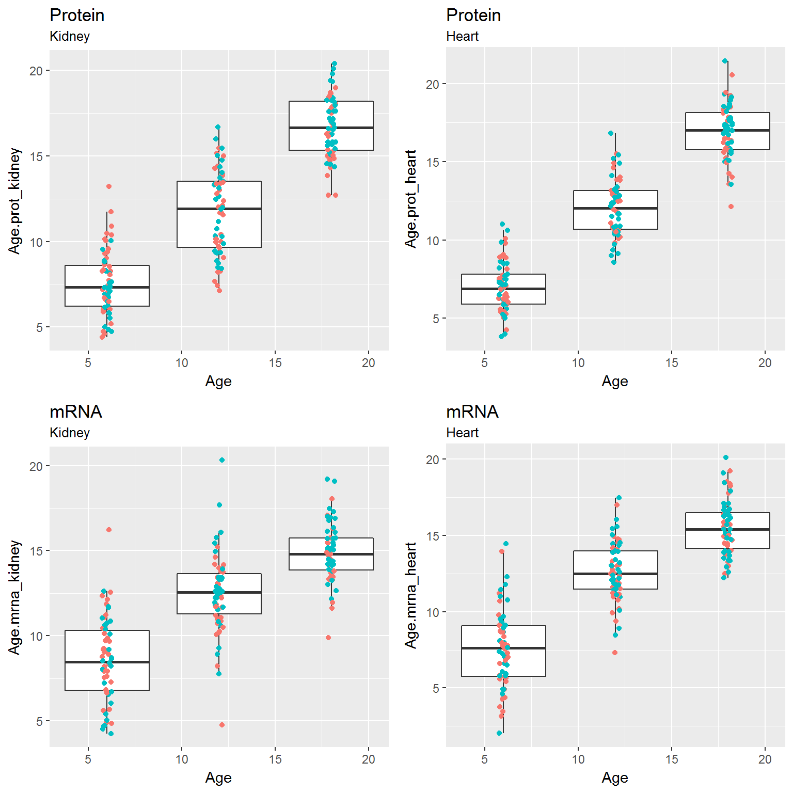
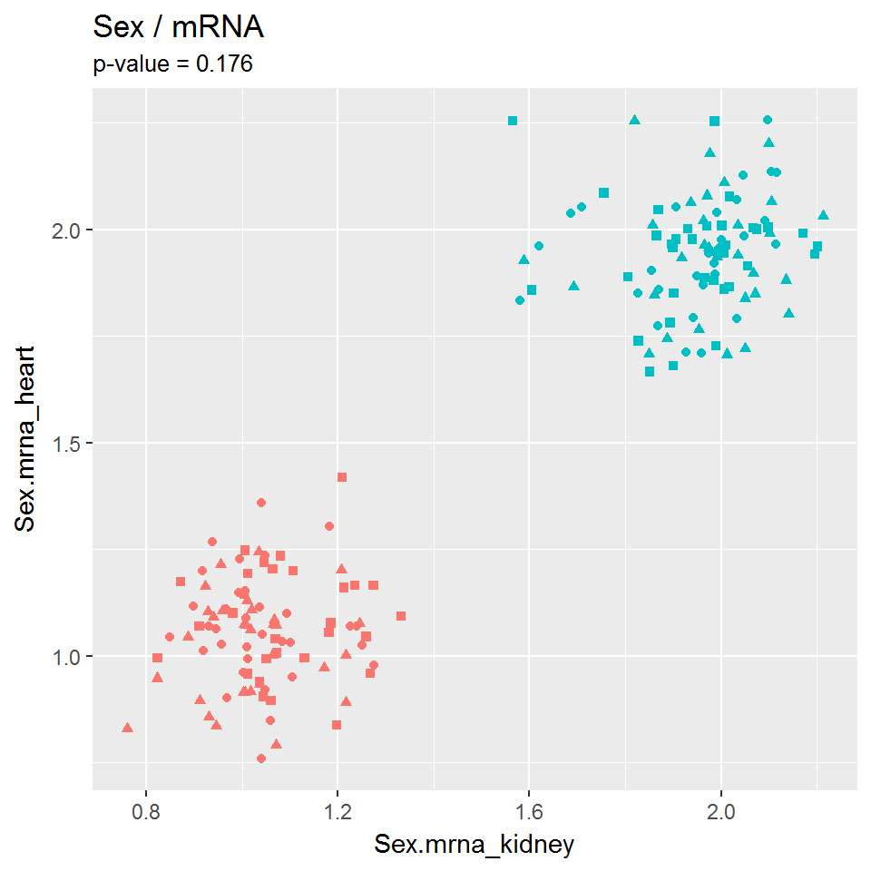
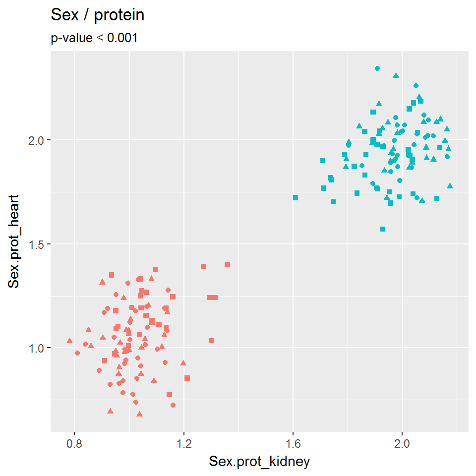
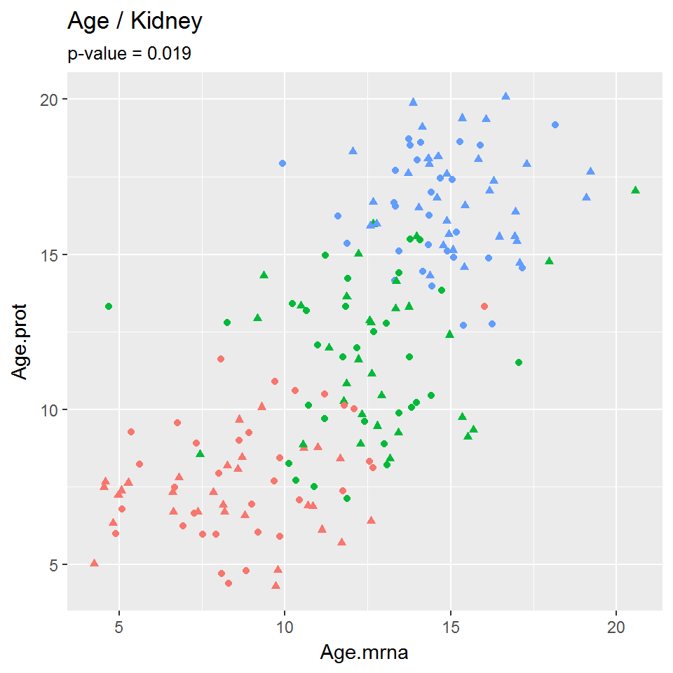
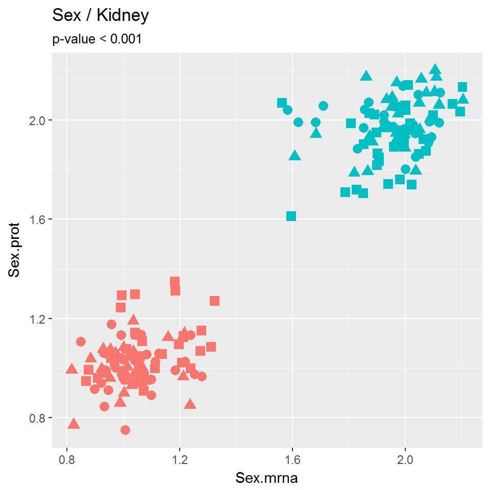
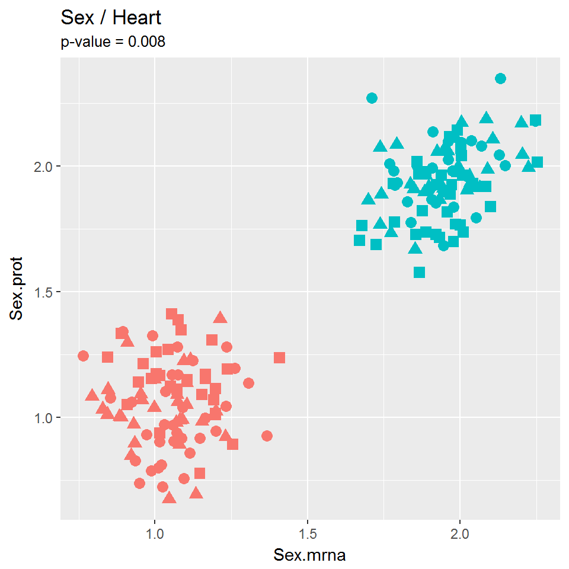

GLMNET Predictions
Petr Simecek
Last updated: 2017-02-13
Code version: 4cc439e
The report has been generated from R/Markdown file predict-glmnet.Rmd. Glmnet predictions have been calculated by predict_glmnet.R script.
Quality of Predictions
Age
| variable | se | cor |
|---|---|---|
| Age.prot_kidney | 2.34 | 0.88 |
| Age.prot_heart | 1.86 | 0.93 |
| Age.mrna_kidney | 3.23 | 0.76 |
| Age.mrna_heart | 2.81 | 0.82 |

Sex
| variable | se | cor |
|---|---|---|
| Sex.prot_kidney | 0.12 | 0.97 |
| Sex.prot_heart | 0.17 | 0.94 |
| Sex.mrna_kidney | 0.13 | 0.96 |
| Sex.mrna_heart | 0.14 | 0.96 |

Comparison between tissues
Age - mRNA

Age - protein

Sex - mRNA

Sex - protein

Comparison between mRNA and protein levels
Age - Kidney

Age - Heart

Sex - Kidney

Sex - Heart

Session Information
sessionInfo()R version 3.3.2 (2016-10-31)
Platform: x86_64-w64-mingw32/x64 (64-bit)
Running under: Windows 7 x64 (build 7601) Service Pack 1
locale:
[1] LC_COLLATE=English_United States.1252
[2] LC_CTYPE=English_United States.1252
[3] LC_MONETARY=English_United States.1252
[4] LC_NUMERIC=C
[5] LC_TIME=English_United States.1252
attached base packages:
[1] stats graphics grDevices utils datasets methods base
other attached packages:
[1] gridExtra_2.2.1 broom_0.4.1 ggplot2_2.2.1 dplyr_0.5.0
loaded via a namespace (and not attached):
[1] Rcpp_0.12.9 knitr_1.15.1 magrittr_1.5 workflowr_0.3.0
[5] mnormt_1.5-5 munsell_0.4.3 lattice_0.20-34 colorspace_1.3-2
[9] R6_2.2.0 highr_0.6 stringr_1.1.0 plyr_1.8.4
[13] tools_3.3.2 parallel_3.3.2 grid_3.3.2 gtable_0.2.0
[17] nlme_3.1-128 psych_1.6.12 DBI_0.5-1 git2r_0.18.0
[21] htmltools_0.3.5 yaml_2.1.14 lazyeval_0.2.0 assertthat_0.1
[25] rprojroot_1.2 digest_0.6.11 tibble_1.2 tidyr_0.6.1
[29] reshape2_1.4.2 evaluate_0.10 rmarkdown_1.3 labeling_0.3
[33] stringi_1.1.2 scales_0.4.1 backports_1.0.4 foreign_0.8-67 This R Markdown site was created with workflowr, data preprocessed with maker